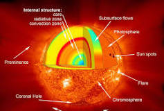

ABOUT SUN
The Sun is a star, the dominant body in our solar system, and the source of light and heat that makes life on Earth possible. It's a massive, hot ball of gas, primarily composed of hydrogen and helium. The Sun's gravity holds the solar system together, and its energy is produced through nuclear fusion in its core.
Here's a more detailed look:

The Sun as a Star:
The Sun is classified as a G-type main-sequence star, also known as a yellow dwarf, and it's our solar system's only star.
Formation and Composition:
The Sun formed about 4.6 billion years ago from a collapsing cloud of gas and dust, and it's primarily composed of hydrogen (70%) and helium (28%), with smaller amounts of other elements.
Energy Production:
The Sun's core is incredibly hot, reaching millions of degrees Celsius, where hydrogen atoms fuse to form helium, releasing tremendous amounts of energy in the form of light and heat.
Influence on Earth:
The Sun's energy is essential for life on Earth. It powers photosynthesis, drives weather patterns, ocean currents, and seasons, and provides the light and heat necessary for plant and animal life.
Solar Activity:
The Sun exhibits activity such as solar flares and coronal mass ejections, which can affect Earth's magnetic field and potentially interfere with technology.
Size and Distance:
The Sun is a massive object, with a diameter of about 865,000 miles (1,392,000 kilometers), and it's located about 93 million miles (150 million kilometers) from Earth.
Gravity:
The Sun's strong gravitational pull keeps the planets, asteroids, and comets in orbit around it.